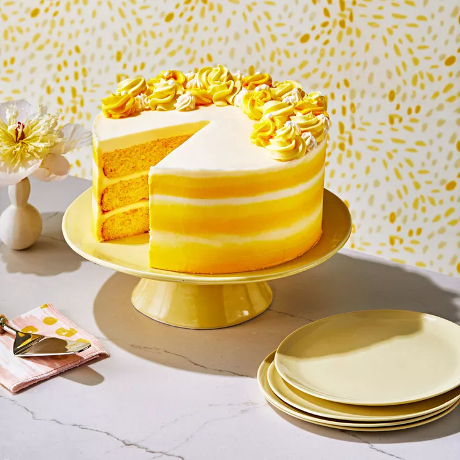

Lemon Cake With Lemon-Thyme Frosting

Ingredients
For the Lemon Cake:
- 2 1/2 cups all-purpose flour
- 2 tsp baking powder
- 1/2 tsp baking soda
- 1/2 tsp salt
- 1 cup unsalted butter, softened
- 1 1/2 cups granulated sugar
- 3 large eggs
- 1 tbsp lemon zest
- 1/4 cup fresh lemon juice
- 1 cup buttermilk
For the Lemon-Thyme Frosting:
- 1 cup unsalted butter, softened
- 4 cups powdered sugar
- 2 tbsp fresh lemon juice
- 1 tbsp lemon zest
- 1 tbsp fresh thyme leaves, finely chopped
Instructions
For the Lemon Cake:
- Preheat oven to 350°F (175°C). Grease and flour two 9-inch round cake pans.
- In a medium bowl, whisk together flour, baking powder, baking soda, and salt.
- In a large bowl, cream together butter and sugar until light and fluffy.
- Add eggs one at a time, beating well after each addition. Stir in lemon zest and lemon juice.
- Gradually add dry ingredients to wet ingredients, alternating with buttermilk. Begin and end with dry ingredients. Mix until just combined.
- Divide batter evenly between prepared cake pans. Smooth the tops with a spatula.
- Bake for 25-30 minutes, or until a toothpick inserted into the center comes out clean.
- Remove from oven and let cakes cool in pans for 10 minutes. Then transfer to wire racks to cool completely.
For the Lemon-Thyme Frosting:
- In a large bowl, beat butter until creamy.
- Add powdered sugar, lemon juice, lemon zest, and chopped thyme. Beat until smooth and creamy.
Assembly
- Place one cake layer on a serving plate. Spread a layer of frosting on top.
- Repeat with the remaining cake layer and frosting.
- Frost the top and sides of the cake with the remaining frosting.
- Optional: Garnish with fresh thyme sprigs and lemon slices.
Enjoy your cake!